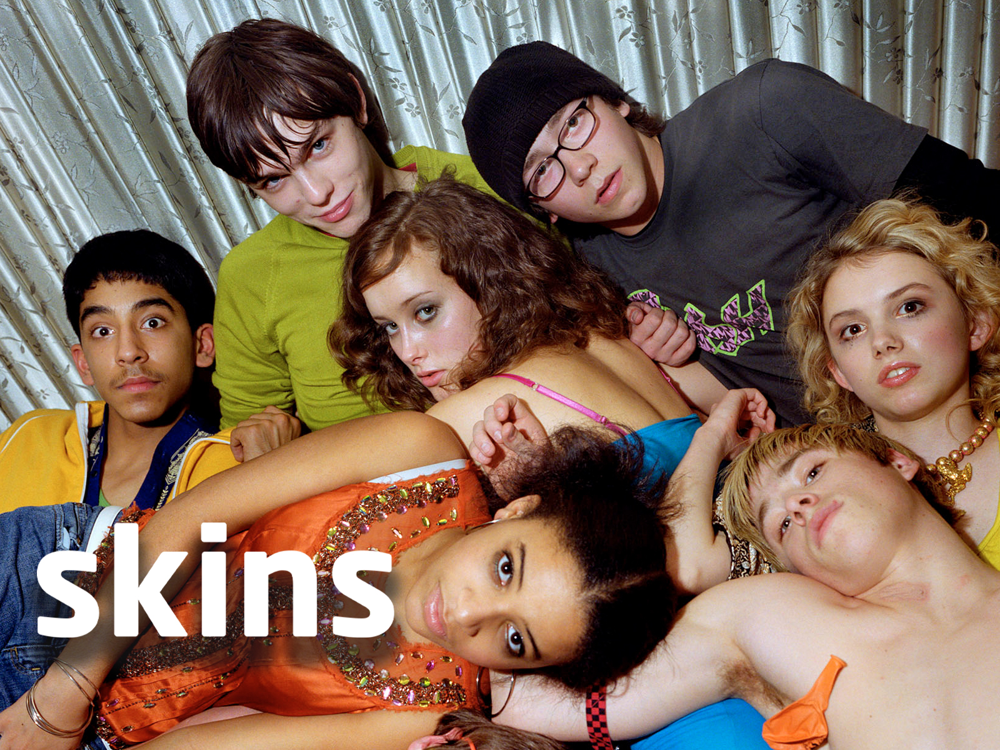
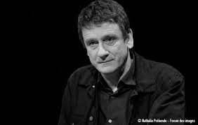
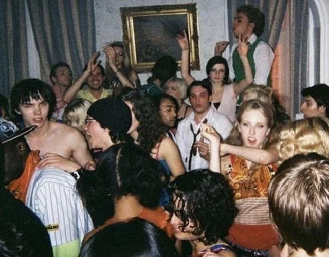
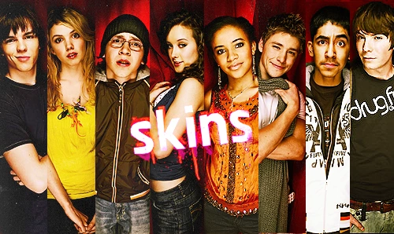
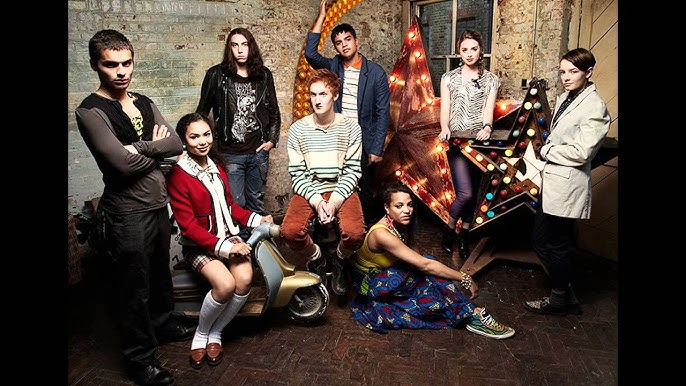
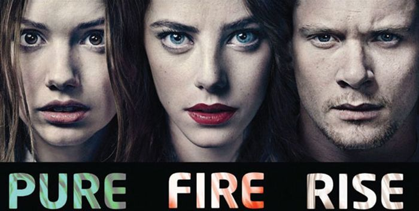

Las vidas de un grupo de adolescentes de la ciudad de Bristol durante los dos años de su bachillerato de 16 a 18 años. En esos últimos años escolares se dedican básicamente a pasárselo en grande pero imitando y cayendo en muchos de los comportamientos tóxicos de sus mayores, bebiendo en exceso, utilizando el sexo como válvula de escape o iniciándose en las drogas.
La gran diversidad del grupo les permite explorar temas delicados, como las familias disfuncionales, los desordenes alimenticios, todo tipo de enfermedades mentales, acoso escolar, identidad de genero y por supuesto abuso de drogas y alcohol.

Elsley es un guionista escocés que alcanzó un cierto reconocimiento como creador de ‘Rose and Maloney’ sobre una pareja de detectives investigadores de errores judiciales interpretados por la gran Sarah Lancashire y Phil Davis. Elsley ( der) estaba estudiando nuevos proyectos que solía enseñarle a su hijo Jamie ( izq) que había abandonado sus estudios y estaba sin saber que hacer con su futuro.
Jamie opinaba que todos esos proyectos paternos eran pura basura de aburrida clase media cuarentona y que no le interesaban en absoluto, y le pidió que hiciera historias de adolescentes y jóvenes que pudieran llegar al público de su edad que carecía de referencias televisivas. El reto aleccionó al padre que le empezó a pedir ideas a su hijo, para plasmar rápidamente una primera idea de lo que acabó siendo ‘Skins’ con padre e hijo colaborando codo con codo, aunque el hijo con el nombre artístico de Jamie Brittain.
Bryan Elsley presentó la idea a los ejecutivos del canal joven E4 del Channel 4, que se la aprobaron de forma casi inmediata y con un generoso presupuesto para su 1T. En una maniobra muy hábil, Elsley contrató a un grupo muy joven de escritores, amigos de su hijo o en busca de una primera oportunidad como el nativo de Bristol, el ahora famoso Jack Thorne ( This Is England, National Treasure), dejándoles una gran libertad para proponer tramas o historias que conocieran de primera mano, de las que él se encargaba de engarzar y darles el toque final.
Tras una búsqueda de actores y actrices jóvenes por todo el Reino Unido, rodaron su 1T en Bristol y la estrenaron el mes de enero de 2007, precedida del siguiente tráiler de presentación.
Su estreno fue todo un éxito instantáneo para la modesta cadena juvenil británica convirtiéndose en todo un fenómeno mediático social , que todavía sigue perdurando

Trailer primera temporada‘Skins’ tiene una estructura que los propios autores han reconocido que cogieron de ‘Perdidos’ , en la que cada episodio está dedicado a un personaje concreto y en algunos casos se inicia incluso con un primer plano de los ojos del protagonista de turno. De esta forma, la historia va avanzando colectivamente pero cambiando el foco en cada episodio para centrarse en los problemas específicos de ese personaje y como se enfrenta a ellos en su entorno familiar y sobre todo grupal.
Cada episodio lleva el título de personaje al que está dedicado y los cambiantes títulos de crédito iniciales nos avanzaban al protagonista de turno, como en este caso con Tony Desde el primer momento ‘Skins’ no intenta ser una serie complaciente con ese grupo de adolescentes en el que la mayoría va a la deriva y tomando decisiones que suele agravar sus situaciones. Las actividades colectivas suelen estar relacionadas con fiestas y reuniones bastante salvajes y descontroladas, como la primera fiesta del primer episodio de ‘Skins’ que muestra el siguiente video.

Fiestas de SkinsA pesar de ese foco cambiante de cada personaje por episodio, ‘Skins’ tenía una enorme continuidad y avanzando siempre cronológicamente sin necesidad de repeticiones de la misma escena desde diferentes ángulos, un recurso habitual en este tipo de series.
Las consecuencias de las decisiones de los personajes se van arrastrando a lo largo de toda la temporada y sin buscar necesariamente finales felices ni edulcorados, porque los problemas que tratan no son pequeñas minucias. La presencia de padres y progenitores suele ser bastante negativa, por la intransigencia de la mayoría de ellos frente a sus conductas, en especial cuando vuelven borrachos o colgados después de una noche de juerga, con esas grandes tensiones familiares como las principales historias mas allá del hilo principal colectivo.
En las dos primeras temporadas tenemos a un mosaico muy interesante de jóvenes, donde tenemos de izquierda a derecha al drogata Chris ( Joe Dempsey), la bulímica Cassie (Hannah Murray), la responsable Jal ( Larissa Wilson), el musulmán Anwar ( Dev Patel), el gay Maxxie ( Mitch Hewer), el narcisisita Tony ( Nicholas Hoult) y la enamoradiza Michelle ( April Pearson) .
Estos personajes se fueron repartiendo los episodios de las dos primeras temporadas, hasta que en una arriesgada decisión creativa y ante el horror de la cadena E4, Bryan Elsley decidió hacer tabla rasa y renovar completamente el reparto y los personajes para la 3T al considerar que al finalizar esos dos años de instituto, debían salir de la escena y renovarse o morir. De todas formas dejaron un hilo de continuidad con la presencia de Effy la hermana menor de Tony que al entrar al instituto pertenecía al núcleo central de esta segunda tanda, algo que se reveló como un gran acierto para que los espectadores mantuvieran la fidelidad a ‘Skins’ con todas las caras nuevas.

En esta segunda generación empezó a destacar rápidamente el personaje de Cook ( Jack O’Connell, centro izq, segundo termino) un mujeriego empedernido que va a causar todo tipo de problemas en el grupo, pero poco a poco al ir siendo presentados en su episodio respectivo fueron ganándose el corazón de los seguidores de ‘Skins’ , La 3T se presentó con el siguiente tráiler.
Trailer segunda generacion
Al final de la 4T no dudaron en repetir la renovación completa dando entrada a la tercera generación de ‘Skins’ , pero sin apenas ninguna relación con las generaciones anteriores dejando el protagonismo a Franky ( Dakota Blue Richards, cuarta por la izquierda) una chica enigmática e inteligente aunque desconcertante por su aspecto andrógino
En esta ocasión la salida de su creador Bryan Elsley al final de la 4T de las responsabilidades globales de ‘Skins’, se notó bastante en las historias de la nueva camada que tendían a ser bastante similares a las de las generaciones anteriores sin que ninguno de sus personajes alcanzara la veneración de las dos primeras tandas. A continuación tienen el tráiler de la misma

En principio se había decidido que el final de la 6T iba a ser el final de ‘Skins’ por el evidente agotamiento de la formula, pero de una manera muy inteligente optaron por hace una especie de epílogo denominado ‘Skins, Redux’ como una reducida 7T y centrada en tres episodios específicos del futuro de tres de los personajes más populares Cassie Cassie ( Pure), Effy ( Fire) y Cook ( Rise) .
En los tres casos nos reencontramos con los personajes veinteañeros, casi cuatro o cinco después de salir del instituto y con sus mochilas particulares juveniles que les siguen pesando, pero intentando cerrar sus historias personales de una manera muy elegante con apariciones sorpresa de otros actores de sus respectivas tandas, como pueden ver en el tráiler de la temporada final de ‘Skins’.
